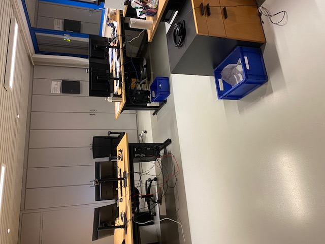

Dagverslag 3: Woensdag 18/01
Begintijd: 8:00 Eindtijd: 16:15 Pauzes: 9:45 tot 10:00, 12:00 tot 12:30, 14:45 tot 15:00
Vandaag begon mijn dag om 8 uur, ik werd ontvangen door Michel. Michel heeft mij opnieuw laten zien hoe banken worden bijgeboekt en hoe het controleren van verkooporders en de facturatie daarvan werkt. Dit vond ik niet boeiend omdat ik dit al twee keer had gezien. Om 9 uur waren we klaar en heb ik voor school mogen werken tot aan de pauze. Na de pauze heeft Dienie mij kort opnieuw uitgelegd hoe verkoopfacturen en aanmaningen verstuurd worden. Na haar uitleg heb ik dit zelf mogen doen onder haar toezicht. Ik vond dat dit goed ging. Terwijl ik verkoopfacturen aan het versturen was liet Dienie mij even alleen, hieraan merkte ik dat ze vond dat ik het goed deed en me hierin vertrouwde. Voor de middagpauze heb ik de brievenbussen van mijn stagebedrijf leeggemaakt. Na de middagpauze heeft Michel uitgelegd wat afsluitwerkzaamheden zijn, ik leerde dat dit toch veel werk is. Michel heeft over twee onderdelen meer uitleg gegeven, namelijk de voorraadwaardering en de afschrijvingen. Dit vond ik interessant omdat dit helemaal nieuw was voor mij. Vandaag was een zeer rustige dag waarbij ik vaak niets kon doen, omdat we snel klaar waren.
Leerpunt van de dag: Ik wil leren betere antwoorden te formuleren.
Mijn dag in één woord: Saai
Foto:
